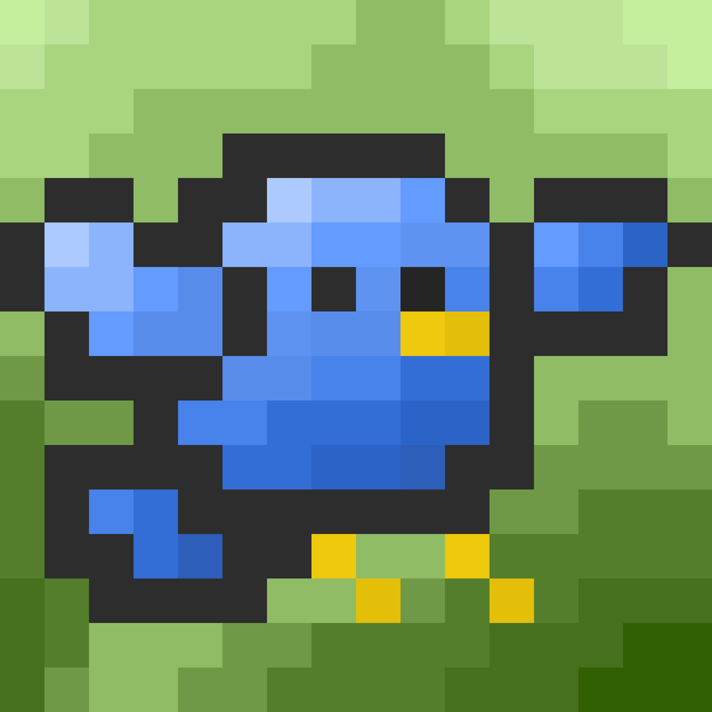

- I created this website as a cozy little corner where adorable pixel pals can find their new homes.
- My goal is not only to share these cute companions but also to bring a smile to your face, brighten your day, and maybe even spark a bit of joy every time you visit.
- My goal is not only to share these cute companions but also to bring a smile to your face, brighten your day, and maybe even spark a bit of joy every time you visit.
